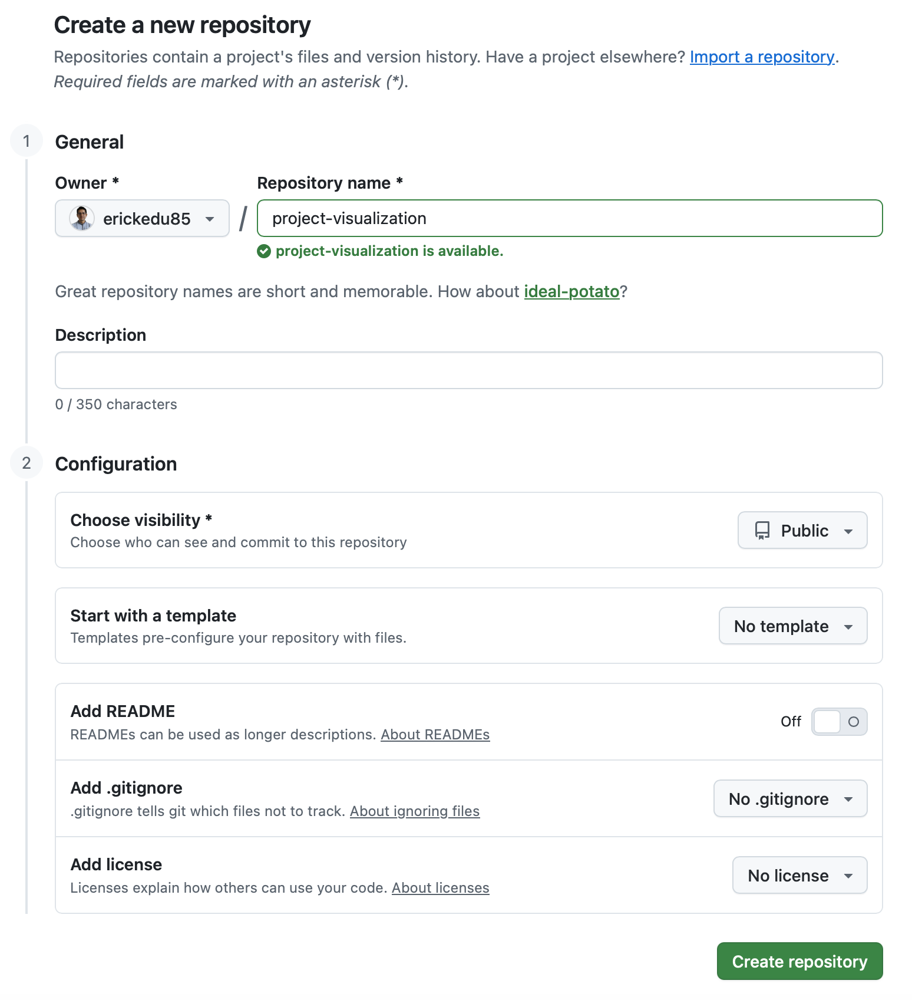

flowchart TD
A[Create project folder] --> B[Create .gitignore]
B --> C[Run git init]
C --> D[Check git status]
D --> E[Run git add .]
E --> F[Create first commit]
F --> G[Create repository on GitHub]
G --> H[Link remote origin]
H --> I[Push to main]
Getting Started with Git for Project Version Control
Introduction
Git is a distributed version control system used to track changes in source code and collaborate efficiently. It is especially useful in programming, research, and data science projects because it preserves the history of changes, supports rollback, and improves reproducibility.
In a typical project workflow, Git helps you:
- track the history of changes
- collaborate more safely
- recover previous versions if needed
- keep experiments and project evolution organized
Why Git matters
Git is not only for software engineering. It is also highly valuable in research, data science, academic projects, and technical documentation because it improves traceability and reproducibility.
Prerequisites
Before starting, make sure you have:
- Git installed on your computer
- Visual Studio Code or another code editor
- a project folder already created
- a GitHub account if you want to publish the repository online
Step 1. Create a .gitignore file
A .gitignore file tells Git which files and folders should not be tracked.
This is important for keeping the repository clean and avoiding unnecessary or machine-specific files.
Create the file from the root of your project:
touch .gitignoreThen add rules such as the following:
# Python
.venv/
__pycache__/
*.pyc
# Environment variables
.env
# macOS
.DS_Store
# Jupyter
.ipynb_checkpoints/
# Quarto
_site/
.quarto/
/.quarto/
*_files/Why is .gitignore important?
- prevents committing unnecessary or large files
- avoids uploading virtual environments such as
.venv - keeps the repository cleaner and lighter
- improves portability across machines
Best practice
Create .gitignore before running git init, so the repository starts clean from the beginning.
Step 2. Initialize Git locally
Once the project folder is ready and .gitignore has been created, initialize Git in the project directory.
git initThis turns your folder into a local Git repository.
Add files to staging
git add .This stages all project files except those excluded by .gitignore.
Create the first commit
git commit -m "Initial clean commit"This saves the first snapshot of your project history.
Check repository status
Before committing, it is a good habit to verify what Git is about to include:
git status
Recommended workflow
A simple initial workflow is:
- create
.gitignore - run
git init - verify files with
git status - stage files with
git add . - create a commit with
git commit
Step 3. Create the repository on GitHub
To publish your project online, create a new repository on GitHub.
Recommended configuration:
- Repository name: choose a meaningful name, for example
project-visualization - Visibility:
PublicorPrivate - Do not initialize with README: this helps avoid unnecessary merge conflicts when linking an existing local project
After that, click Create repository.

Step 4. Link the local repository to GitHub
After creating the remote repository on GitHub, connect your local project to it.
git remote add origin https://github.com/USUARIO/proyecto-visualizacion.git
git branch -M main
git push -u origin mainMeaning of each command
git remote add origin ...: links the local repository to the remote repository on GitHubgit branch -M main: renames the default branch tomaingit push -u origin main: uploads the project and sets the remote tracking branch
Replace placeholder values
Before running the command, replace USUARIO and proyecto-visualizacion with your real GitHub username and repository name.
Common mistakes
Mistake 1. Creating .gitignore too late
If you run git init and stage files before creating .gitignore, unnecessary files may already be tracked.
Mistake 2. Uploading .venv
A virtual environment should usually stay local. Do not include .venv/ in your repository.
Mistake 3. Forgetting to check git status
Committing without reviewing the status can lead to accidental uploads of unwanted files.
Mistake 4. Initializing the GitHub repository with a README
If your local project already exists, initializing the remote repository with a README can introduce avoidable merge conflicts.
Recommended flow
Use this sequence for a clean first setup:
Final note
Git becomes much more useful when used consistently from the start of a project. Even in small academic or personal projects, it helps maintain order, traceability, and reproducibility.
Final recommendation
For projects in Python, Jupyter, or Quarto, always review your .gitignore carefully before the first commit. This small step prevents many common repository problems later.